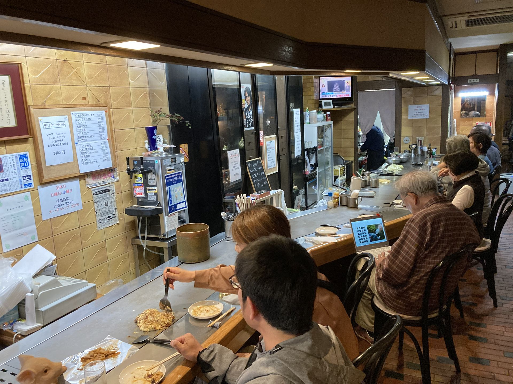

お店について

1976年11月23日、神戸市垂水区に創業。
カウンター席11席だけの小さなお店ですが、目の前の鉄板で丁寧に焼き上げる料理と、温かいもてなしで、地元の皆さまに50年にわたって愛されてきました。
お肉も野菜も魚介も、旬の素材をシェフ兼オーナーが鉄板の上で仕上げます。垂水で数少ない鉄板焼きの名店を、ぜひご体感ください。
「垂水に引っ越してきて、1番初めに来たお店。お母さんの人柄が穏やかで素敵。お肉も野菜も魚介もおいしい。」— Googleマップ 口コミ（★5）
50年
の歴史（1976年創業）
11席
カウンターのみ
4.6★
Googleマップ評価
店舗情報
- 営業時間
- 17:00 〜 21:30
ラストオーダー 21:00 - 定休日
- 水曜日・日曜日
- 席数
- 11席（カウンター席のみ・個室なし）
- 貸切
- 可能（要ご相談）
- 駐車場
- なし
- 喫煙
- 全席禁煙
- お支払い
- 現金のみ
クレジットカード・電子マネー・QRコード決済はご利用いただけません - ご予約
- お電話のみ承ります
ネット予約は行っておりません - テイクアウト
- 可能（宅配・デリバリーは不可）
アクセス
〒655-0026
兵庫県神戸市垂水区陸ノ町7-20
（4階建てビル 1階）
道順（JR垂水駅から）
- JR垂水駅 東口より出る
- 天神川垂水駅福田川線の方向へ約26m進む
- 銀座通りを北へ約250m進む
- 進行方向左手・4階建てビルの1階が店舗
🚶 徒歩約4分（約280m）
山陽垂水駅・JR垂水駅 いずれも徒歩4分でご来店いただけます
ご予約・お問い合わせ
ご予約はお電話のみ承っております。
T E L 078-709-6888- ご予約の際は、お名前・人数・ご希望のお時間をお伝えください
- 貸切のご相談もお気軽にお電話ください
- お支払いは現金のみとなります
- テイクアウトのご注文もお電話にて承ります